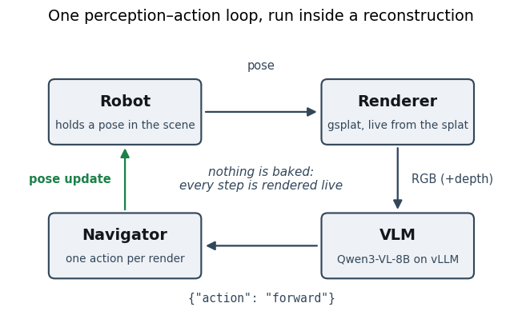
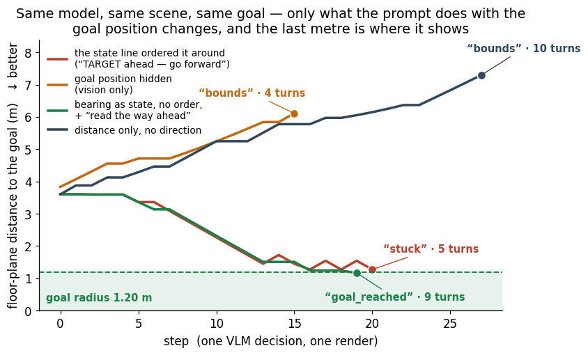
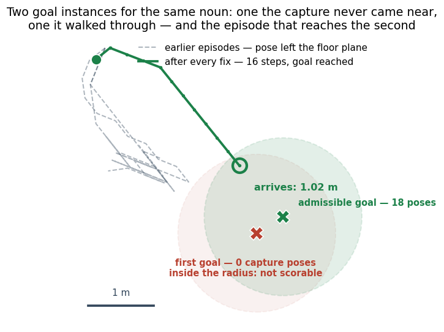
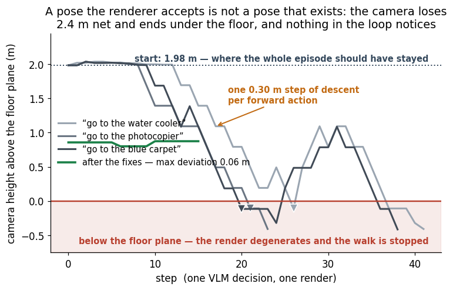
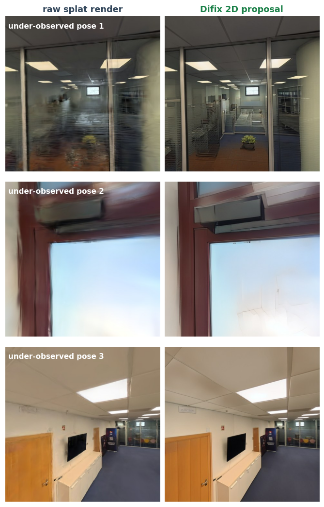

Research note · embodied agents in gaussian splats
A VLM inside a 3D capture follows the coordinate, not the room
We put a robot pose inside a Gaussian-splat reconstruction, rendered its view live at every step and let a vision-language model choose one action per frame. The loop works end to end and its arrivals replicate: 14 episodes of 14 reach the goal, in 16–24 steps, every one scored geometrically inside a 1.20 m radius rather than self-reported. Because every step is logged, it also answers the harder question of what is doing the navigating: a trivial compass follower reproduces 35–71% of the agent's actions, and withholding the goal's direction removes the behaviour — a measurement that points the next round of work at grounding the referent in pixels rather than tuning the walk. Two harness findings come with it: a prompt that turns privileged information into an order stops measuring the model, and a goal is only scorable if the capture itself walked inside its success radius.
01The question
A reconstruction is a place — but nothing inside it can act
We produce indoor Gaussian-splat captures at volume, and they are inert. You can fly a camera through one, and that is where it ends: nothing in the scene has a body, a goal, or a way to be wrong. Meanwhile the thing everyone wants to train — an agent that takes an instruction in a room it has never seen — is starved of exactly that: places, in quantity, with checkable outcomes.
So we built the smallest loop that turns a capture into a place where something can act, and pointed it at a real capture. It is a body: a pose, a live render, a model choosing a verb, an arrival somebody other than the model gets to certify. This note is about that loop — whether it runs, what it actually does, and what has to be true of a goal before an arrival means anything. (§08 sketches what the same walk could do run backwards; that one is a proposal, and it is marked as one.)
Three numbers hold the story together; the rest of the note reconstructs them one at a time.
02The loop
One perception–action loop, and nothing baked
The whole system is four boxes. A robot holds a pose inside the splat. A renderer turns that pose into a view. The vision-language model reads it and emits one action. The navigator applies it, which produces the next pose. There is no precomputed set of viewpoints and no baked video: every step is rendered live from the gaussians, so the agent can stand anywhere the geometry allows.

«A view» is worth spelling out, because everything below depends on what is in it. Each step the model receives four panels — the rgb render, a depth panel, a confidence panel (render alpha: dark where the reconstruction has nothing) and a local map, a small top-down view that rotates with the robot and draws its own trail — plus a one-line text state: step counter, pose coordinates, distance to the wall ahead, and, when goal coordinates exist, the distance and bearing to the goal. It also keeps the previous turn's panels in context. This is not an agent navigating from a bare camera feed, and §05 measures how much of its behaviour that extra information accounts for.
The division of labour is the one design decision worth copying. The model owns direction, the system owns magnitude: the VLM may only emit a verb from a seven-word vocabulary (forward, back, turn_left, turn_right, look_up, look_down, stop), while the executor supplies the numbers — one step is a fixed fraction of the scene's bounding-box diagonal (1.5% here, 0.30 m), one turn is exactly 30°, translation stays on the floor plane, and a forward is capped by the free distance the depth panel reports ahead. A 9 B-class model is good at «turn toward the door» and bad at «move 0.37 m», so we never ask it for the second. One action per render, no chunking.
03Arrival
Arrival is measured, and it carries provenance
A goal-conditioned episode is one command: a scene, a sentence, and optionally the goal coordinates. What the model does not get is a plan, a navmesh or a route: it is handed the panels above and asked for one verb.
The clip is not a lucky sample. Every episode launched under this protocol arrived — 14 of 14, in 16–24 steps, ending 0.97–1.19 m from the goal — and the one shown was chosen among them for the cleanest camera line; the numbers on screen are its own.
Success has provenance, and that is the part we would keep in any harness. With goal coordinates the outcome is geometric: a policy measures the floor-plane distance to the goal and the episode ends when it drops inside the radius (1.20 m here, the usual convention in the vision-and-language-navigation literature [6]). Without coordinates, the model declaring it has arrived is recorded as vlm_declared and labelled unverified — a model of this size will announce success while facing a wall, and a benchmark that counts those as wins measures nothing. Every number in this note is geometric.
04The prompt
Tell the model where to go and it obeys; show it where the goal is and it looks
When goal coordinates exist, our state line used to turn them into an instruction — TARGET 1.3m ahead — go forward, or turn left then forward — and the prompt called that bearing «your compass to the goal: trust it over guessing». So the model trusted it, and pushed forward into a sofa that filled half the frame. We had told it that the pixels were guesswork and the coordinate was truth.
That is a controlled question, so we ran it as one: same model, same capture, same goal, same action set, one episode each, changing only what the prompt does with the goal position. Ordering the model forward on the bearing: it stalls against the sofa at 1.27 m after 21 steps, 5 of them turns. Hiding the position entirely: it walks away, from 3.83 m to 6.11 m. Giving the distance but not the direction: 3.60 m to 7.30 m, the same failure. Reporting the same distance and bearing as state, with nothing else changed: 7 turns in 23 steps and it gets inside the radius, at 1.19 m. Adding a line that asks it to read the way ahead moves that little — 20 steps, 1.17 m — so the wording of the bearing, not the extra advice, is what carries the effect.

| What the prompt says about the goal | Steps | Turns | Closest (m) | Ended at (m) | Outcome |
|---|---|---|---|---|---|
| «go to the water cooler» bearing, phrased as an order («go forward») |
21 | 5 | 1.27 | 1.27 | stopped on «stuck» — no arrival |
| «go to the water cooler» nothing — goal position hidden |
16 | 4 | 3.83 | 6.11 | stopped on «bounds» — no arrival |
| «go to the water cooler» distance only, no direction |
28 | 10 | 3.60 | 7.30 | stopped on «bounds» — no arrival |
| «go to the water cooler» distance and bearing as state (nothing else changed) |
23 | 7 | 1.19 | 1.19 | goal reached — measured |
| «go to the water cooler» distance and bearing as state, plus «read the way ahead» |
20 | 9 | 1.17 | 1.17 | goal reached — measured |
The lesson generalises past our prompt: the moment a harness tells a model what to do with privileged information, it stops measuring the model and starts measuring the harness. Report state, ask for a decision.
05What the agent is
A compass follower reproduces 35–71% of its actions
The arrival does not answer the question that matters: is this thing navigating, or following the arrow we hand it? That is measurable. Take a trivial compass follower — turn toward the goal bearing whenever it is more than 15° off, otherwise go forward — and count how often the model chose exactly what it would have chosen.
| What the model is told about the goal | Agreement with a compass follower | Outcome |
|---|---|---|
| bearing, phrased as an order | 71% (15/21) | stuck at 1.27 m |
| distance and bearing, as state | 35% (8/23) | goal reached at 1.19 m |
| distance and bearing, as state (scorable goal) | 69% (11/16) | goal reached at 1.02 m |
| distance only, no direction | 25% (7/28) | bounds at 3.60 m |
| nothing | 12% (2/16) | bounds at 3.83 m |
Read together, the picture is precise. This agent is a compass follower with a visual veto: the coordinate supplies the direction, the panels talk it out of the worst consequences — that is the gap between the 71% of the ordered run and the 35–69% of the rest — and the noun in the instruction is never grounded. Hide the direction and it does not find a water cooler that is visible from the corridor. So this is not yet vision-and-language navigation — it is coordinate-following with an obstacle check — and having that measured, rather than suspected, is what tells us where the effort should go: grounding the referent in the image, and giving the agent a reason to explore, rather than tuning the walk.
There is a hard limit under it, too. The episode that does not arrive ends in front of furniture between it and the goal, and this vocabulary has no way around one — no strafe, no lateral planning, nothing that turns «blocked ahead» into a detour. The successful run got in because it could turn early enough to find an open line, not because it went around anything.
06Admissible goals
The capture itself tells you which goals can be scored
Auto-generated tasks are only as good as their goals, and ours came from a scene graph as object centroids. Two of the four instructions we minted fail that bar, in opposite ways — and the useful part is that the capture itself, with one cheap test, says which and why.
The first instance of «water cooler» sits 1.93 m up in the air with a bench in front of it. The capture that built this splat walked 438 poses through the office, and not one of them lies within the 1.20 m success radius of that point; the nearest is 1.40 m away. The loop can still get there — one episode ends 1.17 m from it, closer than any capture pose — but the views inside that radius are extrapolation, not observation, and an approach scored there is not scored fairly. That is the criterion, and it is cheap: a goal is admissible only if a capture pose exists inside its success radius. Same scene graph, same label, second instance: 18 poses inside.
| Goal (scene-graph instance) | Height (m) | Nearest capture pose (m) | Poses inside the radius | Verdict |
|---|---|---|---|---|
| water cooler — first instance | 1.93 | 1.40 | 0 | not scorable |
| water cooler — second instance | 0.37 | 1.01 | 18 | scorable |
| photocopier | 0.43 | 0.87 | 12 | scorable |
The other failure is the mirror image. «Go to the blue carpet» names a referent covering most of this office's floor: the robot stands on the blue carpet for nearly the whole episode while the test compares its position against a single point on that carpet. A goal that is a region cannot be checked with a point, and the 4.49 m «miss» that comes out is not a measurement of anything. So the generator needs two tests, not one: the referent must be localized enough for a radius to mean something, and the radius must contain somewhere the capture actually went.

07What a splat will not tell you
An impossible pose still comes back as a picture
Before any of the above could be measured, an earlier batch of three episodes had to be thrown away, and the reason is worth one section because it is a property of this whole class of environment. A Gaussian splat has no collision surface and no notion of a valid viewpoint. Ask it for a render from inside a wall, or from below the floor, and it returns an image — degraded, but an image. Our executor was re-seating the camera on a per-cell ground estimate after every move, rate-limited to one step; where that estimate was wrong the limit became a staircase, and the camera walked 2.4 m down and out of the building, one 0.30 m action at a time. The renderer never objected. The model kept choosing verbs. The run ended with a plausible-looking stop reason.

Two things follow for anyone building this. Validate the pose yourself — the renderer will not — and measure progress in a way an oscillation cannot fake: our stall guard used the spatial extent of recent poses, and a blocked robot rocking between two points spans exactly one step length, so it read as progress until the step budget ran out. We caught both by watching the renders; the harness alone reported an ordinary stop reason for all three episodes, which is why a replay you can watch is part of the method, not a nicety.
08The second use
Run the same walk backwards and it becomes a way to find a capture's blind spots
Everything above runs the loop forwards: a goal, a walk, an arrival that somebody else certifies. It is worth writing down what the same machinery looks like pointed the other way, because that is where this work goes next — and because none of it is demonstrated here.
A capture is never uniform. Some surfaces were walked past slowly from three angles; others were seen once, far away, at a grazing angle, and the splat renders them as fog on the glass, a ghosted cabinet, a monitor melted into the wall. Nothing in the reconstruction raises its hand about those poses. But a robot that can stand anywhere in the scene and be rendered can go looking for them — the same render–decide–move loop, with «find the views this capture does not support» where the goal coordinate used to be. Each pose it flags is then a candidate for a single-step diffusion filler (Difix [3]) to propose what the view should have looked like, and that proposal becomes the target the gaussians are refitted towards: a capture library that repairs itself, using the walker as its own quality inspector.

These are pictures, not results. We have run the pieces; what we do not have is evidence, and we are not going to dress a pipeline up as one. Two questions decide whether this is worth anything, and neither is answered in this note: whether an embodied walk finds the poses worth repairing better than a cheap uncertainty criterion over the capture would [8], and whether what a generative model invents in a region nobody photographed is true — a question no reference metric can settle, since there is no reference there to score against. Treat the images above as an illustration of the hypothesis, not as its test. The measured content of this note is the loop above.
09Why it matters
A world you can reconstruct is a world you can train in
One engine, and that is the point. Pointed at a library of captures, the same loop yields navigable space (a robot can stand anywhere in it and be rendered), the coverage probe of §08 if that pans out, and — the piece we are building next — checkable tasks: open-vocabulary 3D instances extracted from the posed photos, turned into instructions whose success condition is a coordinate rather than a model's opinion. That last link is what makes the data trainable rather than merely watchable, and §06 is the reason it needs a validity test of its own.
The economics only work at scale, and scale is what reconstruction has that hand-authored simulation does not: our target is on the order of 200,000 indoor captures — a target, not a measurement. What this note establishes is the unit cost: one command, no human in the frame, two 24 GB cards for the whole loop — renderer and model server.
Methods note
Protocol. Navigation: 23 goal-conditioned episodes on one indoor capture, gsplat renderer, Qwen3-VL-8B-Instruct served by vLLM (temperature 1.0), one action per render (no chunking), step = 1.5% of the AABB diagonal (0.30 m), turn = 30°, forward capped by the depth clearance ahead. Arrival is a floor-plane distance (the scene's up axis is −y) against a 1.20 m radius, provenance geometric; goal coordinates come from a scene graph of 48 labelled instances, and admissibility is tested against the capture's 438 poses. The bearing-as-state protocol on the admissible goal was run 14 times (sampling at temperature 1.0); all 14 arrive, and §03 features the run with the most frontal arrival — its own recorded numbers, uncut. Three earlier episodes, on a different date and with a different 9 B VLM, are shown in §07 as the pose-validity failure and are not scored or compared. The prompt variants in §04 differ only in the goal wording; the compass-follower agreement in §05 uses a 15° dead zone. §08 describes an unevaluated direction and reports no measurement. The loop itself — renderer, navigator, VLM client and the single command that runs an episode — is the gaussian-bot repository [9]; the action set, the termination policies and the goal metric used here are its ADRs 0004, 0006 and 0007.
Data rigor. Every figure and every number in the text is regenerated from the archived run outputs by the script that builds this page, not typed into the prose; the only hand-written values are the target scale in §09 (labelled as a target) and the axis limits of the charts. The episode clip is encoded from the run's own frame sequence and is uncut.
Limits. 14 arrivals of 14 are a replication on one goal in one scene, not a success rate across scenes or instructions — and none of them is vision-grounded: a trivial compass follower reproduces 35–71% of the agent's actions, and with the direction removed the agent does not approach the target — nothing here shows the model resolving «water cooler» from pixels. One episode per prompt variant, one scene, one model. Goal admissibility is tested against capture poses, which is a proxy for what the capture can support, not a navmesh. Nothing here is pinned: renderer and VLM are pluggable, and neither has been ablated.
10Conclusions
The loop is real; the agent is following a coordinate
Driving a robot inside a Gaussian splat works as an engineering proposition: live rendering, a VLM in the decision seat, arrival measured rather than declared, one command — and the arrivals replicate, 14 of 14 under the same protocol. What it does not yet deliver is navigation in the sense that word implies. Counted against a trivial compass follower, 35–71% of this agent's actions are what the bearing alone would have produced, and removing the direction removes the behaviour. The next experiment is the one that grounds the noun, not the one that tunes the walk.
The transferable recipe is smaller than the system. Let the model own direction and the system own magnitude — and let it own the decision too: give it state, not orders. Test that your goals are scorable before you score anything against them. And validate poses yourself, because a reconstruction will happily render one that cannot exist.
—References
- 3D Gaussian Splatting for Real-Time Radiance Field Rendering. Kerbl et al., SIGGRAPH 2023 — the scene representation the whole loop stands on.
- gsplat. Ye et al., open-source library, 2024 — the rasteriser that renders the robot's view every step.
- Difix3D+: Improving 3D Reconstructions with Single-Step Diffusion Models. Wu et al., CVPR 2025 — the single-step filler the coverage probe of §08 would hand its flagged poses to.
- Qwen3-VL-8B-Instruct. The vision-language model in the decision seat, served locally, no fine-tuning for this task.
- Efficient Memory Management for Large Language Model Serving with PagedAttention. Kwon et al., SOSP 2023 — vLLM, which serves the model headlessly next to the renderer.
- Vision-and-Language Navigation: Interpreting visually-grounded navigation instructions in real environments. Anderson et al., CVPR 2018 — the task family, and where the goal-radius convention comes from.
- MapGPT: Map-Guided Prompting with Adaptive Path Planning for Vision-and-Language Navigation. Chen et al., ACL 2024 — topological memory this loop does not have.
- FisherRF: Active View Selection and Uncertainty Quantification for Radiance Fields using Fisher Information. Jiang et al., ECCV 2024 — the uncertainty-driven next-best-view the coverage walk of §08 would have to beat.
- OVER Research. gaussian-bot — the system this note measures: the splat loader, the pluggable renderer and VLM protocols, the navigator and the CLI that runs one goal-conditioned episode, with the design decisions recorded as ADRs (github.com/OVR-Platform/gaussian-bot).